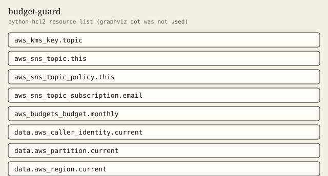

budget-guard
Monthly cost budget that notifies at 50, 80, and 100 percent.
Tests passed 5 of 5. Failed 0.
Inputs
| Name | Type | Required | Description |
|---|---|---|---|
| email_addresses | list(string) | no | Email addresses notified with the SNS topic. Empty notifies only the topic. |
| limit_amount | number | yes | Monthly cost budget amount in USD. Required. Values in examples are placeholders, not recommendations. |
| name_prefix | string | yes | Prefix for the budget and the notification topic. |
| tags | map(string) | no | Extra tags merged onto every taggable resource. ManagedBy and Module are always set by the module. |
Outputs
| Name | Description |
|---|---|
| caller_context | Account, partition, and region resolved from data sources. |
| email_subscription_count | Email subscriptions on the budget topic. Zero when email_addresses is empty. |
| limit_amount | Budget limit as planned. Example values are placeholders, not recommendations. |
| notification_count | How many budget notifications are configured. |
| notification_thresholds | Percentage thresholds notified for the monthly budget. Fixed at 50, 80, and 100. |
| notification_types | Notification types sent at each threshold. |
| tag_audit | Tags on every taggable resource this module creates. |
| topic_name | SNS topic name that receives budget notifications. |
Example
The caller supplies the region. This example does not embed an account id.
module "budget" {
source = "../.."
name_prefix = "demo-cost"
limit_amount = 1
tags = {
Example = "basic"
}
}
Tests
- placeholder_amount passed
- with_email passed
- different_placeholder passed
- reject_zero passed
- reject_negative passed
Mock plan excerpt
mocked provider: ARNs and IDs are simulated. This excerpt is from terraform test with a mocked provider, not a live plan.
mocked provider: ARNs and IDs are simulated. This is terraform test -verbose, not a live plan.
tests\budget-guard.tftest.hcl... in progress
run "placeholder_amount"... pass
Terraform used the selected providers to generate the following execution
plan. Resource actions are indicated with the following symbols:
+ create
Terraform will perform the following actions:
# aws_budgets_budget.monthly will be created
+ resource "aws_budgets_budget" "monthly" {
+ account_id = (known after apply)
+ arn = (known after apply)
+ budget_type = "COST"
+ id = (known after apply)
+ name = "demo-cost-monthly-cost"
+ name_prefix = (known after apply)
+ tags = {
+ "ManagedBy" = "terraform"
+ "Module" = "budget-guard"
+ "Owner" = "platform"
}
+ tags_all = (known after apply)
+ time_period_start = (known after apply)
+ time_unit = "MONTHLY"
+ notification {
+ comparison_operator = "GREATER_THAN"
+ notification_type = "ACTUAL"
+ subscriber_sns_topic_arns = [
+ (known after apply),
]
+ threshold = 100
+ threshold_type = "PERCENTAGE"
}
+ notification {
+ comparison_operator = "GREATER_THAN"
+ notification_type = "ACTUAL"
Resources
graphviz dot was not installed. The figure is a python-hcl2 resource list.

Changelog
Changelog
All notable changes to this module are documented in this file.
The format is based on Keep a Changelog, and this module uses Semantic Versioning.
[1.0.0] - 2026-10-03
Added
- Monthly cost budget with notifications at 50, 80, and 100 percent.
Billable item names
Names only. This page does not quote a price. Example amounts, including a budget limit, are placeholders and are not recommendations. GuardDuty and Security Hub stay off unless a module switch is set, because those services are billable.
- AWS Budgets
- Amazon SNS
- AWS Key Management Service